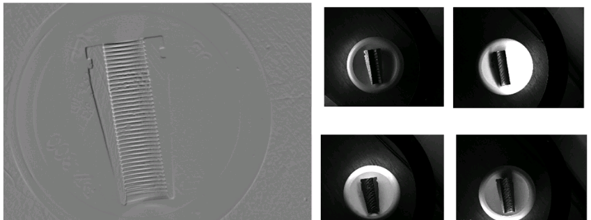
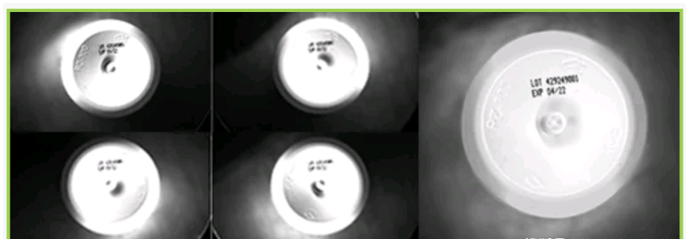
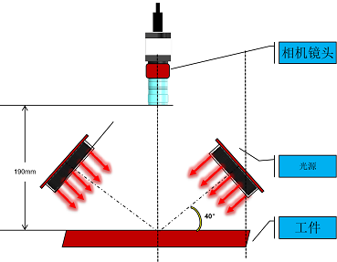
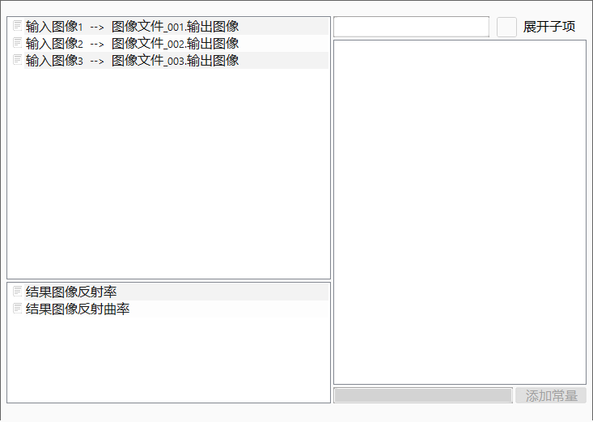
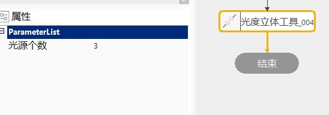
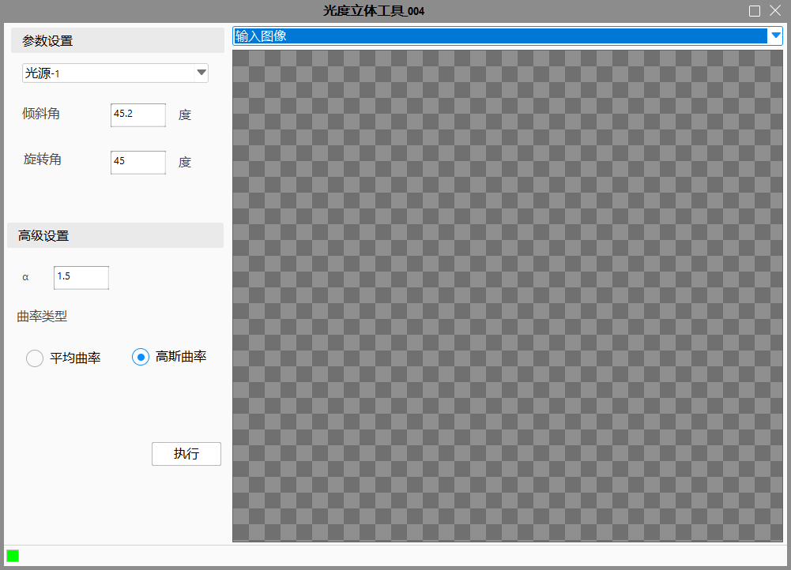
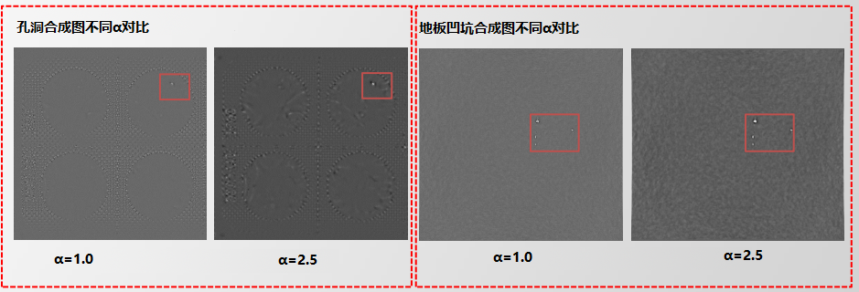

光度立体是一种使用多个光源方向估计表面几何形状的方法。
通常情况下，可以使用传统照明解决方案轻松识别划痕和凹痕等简单缺陷。但是，某些对象具有3D表面，这使准确识别表面缺陷变得更加困难，例如浮雕，纹理化或高反射性表面，以及那些对象几乎没有特征对比度或纹理的对象。为了在这些困难的物体表面上实现适合特征的表面对比度并最终收集3D透视图，可以将“光度立体”应用于在保持观察方向不变的同时，改变连续观察之间的入射照明方向。
例如在检测螺纹物体时，物体螺纹高度的变化会产生明显的阴影，这使得目视检查缺陷非常困难，金属表面也带来了不必要的眩光挑战，使用光度立体法就可以很好的避免这样的问题。

在测量有凹陷表面的物体时，如瓶底的字符，由于瓶子底部具有反射和凹入的表面特性，因此很难在没有过多镜面反射的情况下照亮已打印的批号。在光度立体照射下，就能获得一个洁白的底面，辅助提取瓶底的字符。

相机成像效果受光源的强度、位置、角度等因素影响，不同的打光方案可提供不同的成像效果。有些缺陷在特定的打光下才能呈现得明显，所以多光源检测可以提高缺陷检测的效率，减少漏检、误检等情况的发生。

工具的执行流程：配置输入 -> 高级属性界面设置 -> 执行计算。相机使用远心或长焦镜头，光源采用强度均匀的远心光源或者远距离点光源。

点击工具，如图4所示，设置光源个数，范围是[3,10]且光源个数和属性链链接参数个数保持一致。


选择光源下拉框，可以对每个输入的图像设置，根据需要设置α的值和选择曲率类型，点击执行即可。

曲率类型说明：凸起、字符、凹坑等建议选择平均曲率；孔洞建议选择高斯曲率。
结果图像包含反射率图像和反射曲率图像。一般情况下检测划痕选择反射率图像输出，其他情况选择反射曲率图像输出。
| 参数名称 | 参数描述 |
|---|---|
| 光源个数 | 链接图像的个数 |
| 输入图像 | 链接输入的图像 |
| α | 平衡瑕疵和外部干扰，范围是[0.2,50] |
| 倾斜角 | 光源与相机在垂直方向的夹角，范围是[0，180°] |
| 旋转角 | 光源与物料X方向的夹角,范围是[0,360°] |
| 参数名称 | 参数描述 |
|---|---|
| 结果图像反射率 | 输出的反射率图像 |
| 结果图像反射曲率 | 输出的反射曲率图像 |
| 执行结果 | 工具执行结果 |
| 执行时间 | 工具执行时间 |
参见“\Samples\光度立体工具.gvp”。